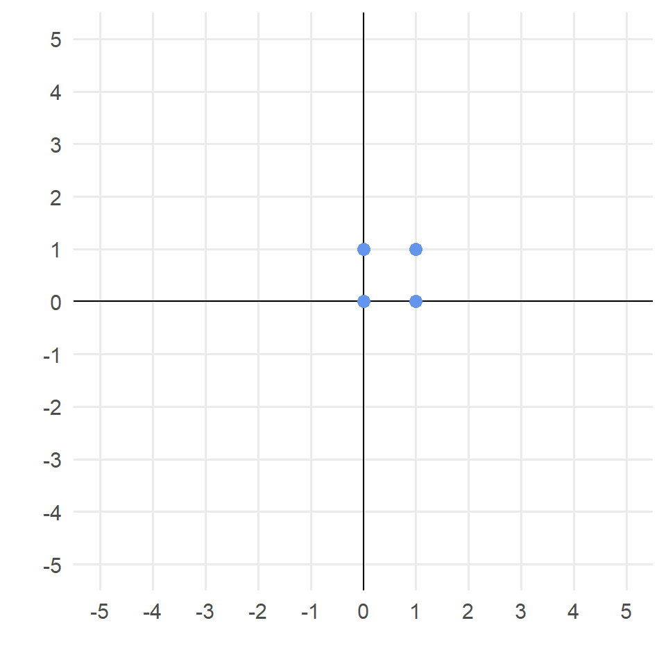
1.2 - linear transformations
Linear transformations of image data
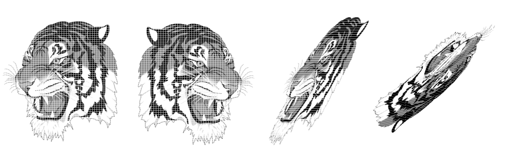Linear combinations and dot products
A linear combination of a vector is simply a weighted sum of its coordinates
Linear combinations are often represented by dot products
The dot product of two \(p-\)dimensional vectors is a single number
E.g., consider the dot product of \(u = (3,1)\) with weighting vector \(w = (-1, 4)\):
\[<u,w> = u \cdot w = (3, 1) \times \begin{pmatrix} -1 \\ 4 \end{pmatrix}\]
\[ = 3\cdot -1 + 1\cdot 4 = 1\]
- Note that dot products require one vector written as a row and the other as a column vector.
Example: Kwik Trip
- At Kwik Trip, a corn dog costs $1.99; a milkshake costs $5.29, and a 9.9 oz bag of takis costs $5.29.
- You go to Kwik Trip and buy 2 corn dogs, a milkshake, and 5 bags of takis.
- How can you represent \(C\), the total cost, as the dot product of two vectors? How would you define these vectors? What is \(C\)?
\[u = ?\] \[w = ?\] \[C = <u,w> = ?\]
Example: linear regression
- In linear regression, we often represent fitted values as the dot product between and \(x\) vector and a \(\hat\beta\) vector.
- Suppose you’ve fit a linear regression model of house price on the size (in square meters) and number of bedrooms.
- You have the following output:
Coefficients:
Estimate Std. Error t value Pr(>|t|)
(Intercept) 55957.2 22896.1 2.443 0.0187 *
size 989.4 195.6 5.056 2.04e-06 ***
bedrooms 10291.9 3688.2 2.791 0.0076 ** - GOAL: predict the price of a home with 200 sq m and 3 bedrooms.
- This is the dot product \(<x,\hat\beta>\) with:
\[x = ?\] \[\hat\beta = ?\]
Geometric interpretation
The dot product of two \(p\)-dimensional vectors is a single number
The sign of this number is related to the angle between the vectors:
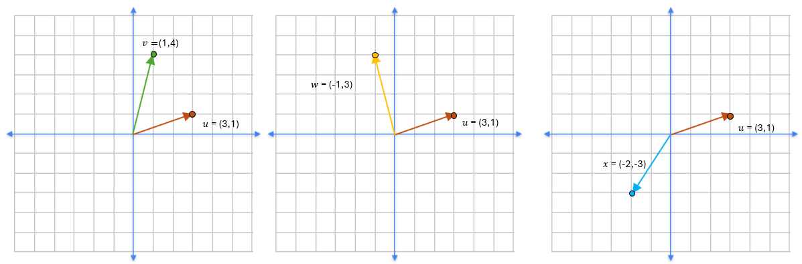
\[<u,v> = 3\cdot 1 + 1\cdot 4 = 7 > 0\]
\[<u,w> = 3\cdot -1 + 1 \cdot 3 = 0\]
\[<u,x> = 3\cdot -2 + 1 \cdot -3 = -9 < 0\]
Geometric interpretation
It turns out:
\[ <u,v> = ||u||_2 ||v||_2 cos(\theta) \]
where \(\theta\) is the angle formed by \(u\) and \(v\):
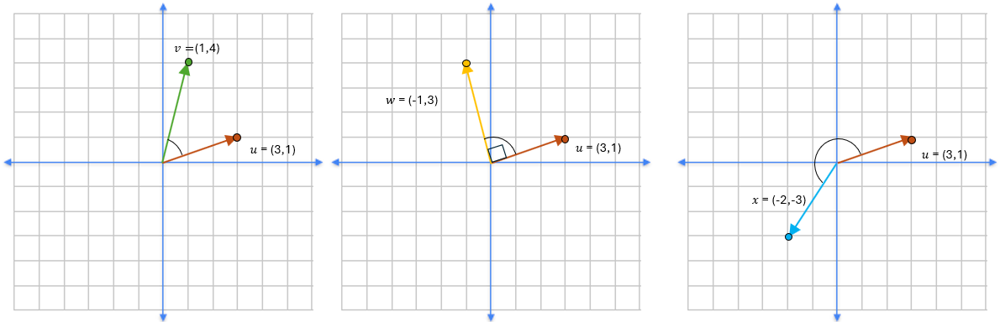Note also: orthogonal (i.e., perpendicular) vectors have dot product = 0!
Linear transformations = Dot products by matrices
- The dot product of two \(p-\)dimensional vectors is always a single number, representing the angle between them.
- If a \(p\)-dimensional vector is dot-multiplied by a \(p\times m\) matrix, the result is a linear transformation: a mapping of \(p\) dimensional space onto \(m\) dimensional space.
Matrix multiplication: a refresher
Consider the \(2 \times 2\) matrix \(A = \begin{pmatrix} 3 & 2 \\ 1 & 2 \end{pmatrix}\) and 2-dimensional vector \(u = (1,2)\).
Then:
\[Au = \begin{pmatrix} 3 & 2 \\ 1 & 2 \end{pmatrix}\begin{pmatrix} 1 \\ 2 \end{pmatrix}\]
\[= \begin{pmatrix} 3\cdot 1 + 2\cdot 2 \\ 1\cdot 1 + 2\cdot 2 \end{pmatrix}\]
\[= \begin{pmatrix} 7 \\ 5 \end{pmatrix}\]
Note that we have transformed one 2-dimensional vector into another 2-dimensional vector!
Matrix multiplication dimensions
When multiplying matrices \(A\) (\(n\times p\)) and \(B\) (\(p \times m\)):
- \(ncol(A)\) must equal \(nrow(B)\)
- \(AB\) has dimension \(n \times m\) = \(nrow(A) \times ncol(B)\)
Matrix multiplication dimensions
- Reconsider the \(2\times 2\) matrix \(A = \begin{pmatrix} 3 & 2 \\ 1 & 2 \end{pmatrix}\) and vector \(u = (1,2)\).
- To multiply \(Au\), \(u\) must be expressed as a \(2 \times 1\) matrix: \[\begin{pmatrix} 1 \\ 2 \end{pmatrix}\]
- Result of \(Au\) is \(2\times 1\) (\(ncol(A) \times nrow(u)\))
- To reverse order of multiplication, we would have to express \(u\) as a row vector:
\[u^T A = \begin{pmatrix}1 & 2 \end{pmatrix} \begin{pmatrix} 3 & 2 \\ 1 & 2 \end{pmatrix}\]
\[ = \begin{pmatrix}1\cdot 3 + 2\cdot 1 & 2 \cdot 2 + 2 \cdot 2 \end{pmatrix}\]
\[= \begin{pmatrix} 5 & 8 \end{pmatrix}\]
Linear transformation: a visual
- In the following slides, let’s consider a transformation of the \(4 \times 2\) matrix of row vectors:
\[\color{CornflowerBlue}{X = {\begin{pmatrix} 0 & 0 \\ 1 & 0 \\ 1 & 1 \\ 0 & 1 \\ \end{pmatrix}}}\]
Consider this a “data frame” of \(n = 4\) rows and \(p=2\) columns.
We will apply the transformation matrix \(A = \begin{pmatrix} 3 & 1 \\ 2 & 2 \end{pmatrix}\).
First row
\[\color{CornflowerBlue}{\begin{pmatrix} 0 & 0 \end{pmatrix}} \begin{pmatrix} 3 & 1 \\ 2 & 2 \end{pmatrix} = \color{Orange}{\begin{pmatrix} 0 & 0 \end{pmatrix}}\]
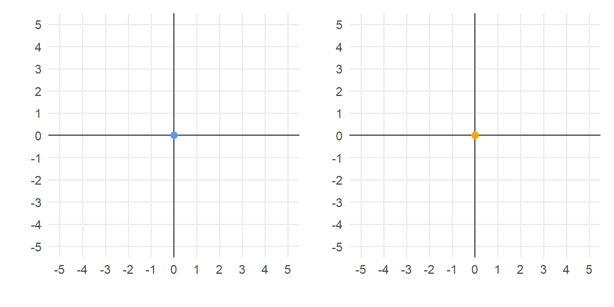Second row
\[\color{CornflowerBlue}{\begin{pmatrix} 1 & 0 \end{pmatrix}} \begin{pmatrix} 3 & 1 \\ 2 & 2 \end{pmatrix} = \color{Orange}{\begin{pmatrix} 3 & 1 \end{pmatrix}}\]
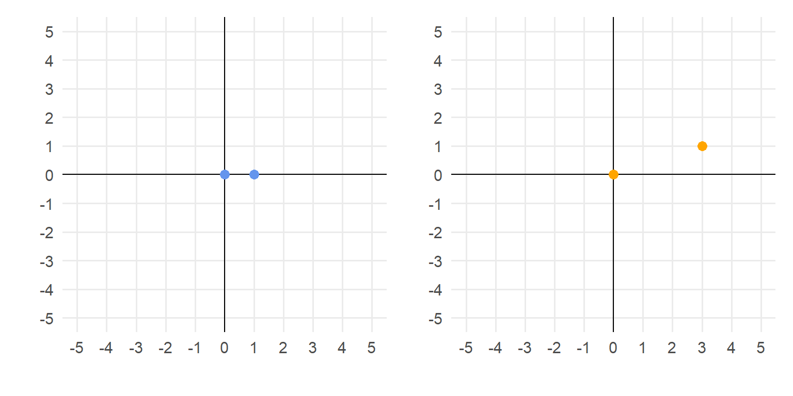Third row
\[\color{CornflowerBlue}{\begin{pmatrix} 1 & 1 \end{pmatrix}} \begin{pmatrix} 3 & 1 \\ 2 & 2 \end{pmatrix} = \color{Orange}{\begin{pmatrix} 5 & 3 \end{pmatrix}}\]
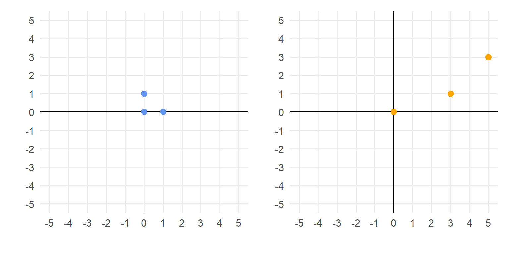Fourth row
\[\color{CornflowerBlue}{\begin{pmatrix} 0 & 1 \end{pmatrix}} \begin{pmatrix} 3 & 1 \\ 2 & 2 \end{pmatrix} = \color{Orange}{\begin{pmatrix} 2 & 2 \end{pmatrix}}\]
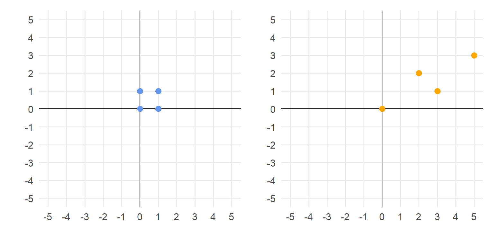Full transformation
\[\color{CornflowerBlue}{{\begin{pmatrix} 0 & 0 \\ 1 & 0 \\ 1 & 1 \\ 0 & 1 \\ \end{pmatrix}}}\begin{pmatrix} 3 & 1 \\ 2 & 2 \end{pmatrix} = \color{Orange}{\begin{pmatrix} 0 & 0 \\ 3 & 1 \\ 5 & 3 \\ 2 & 2 \end{pmatrix}}\]
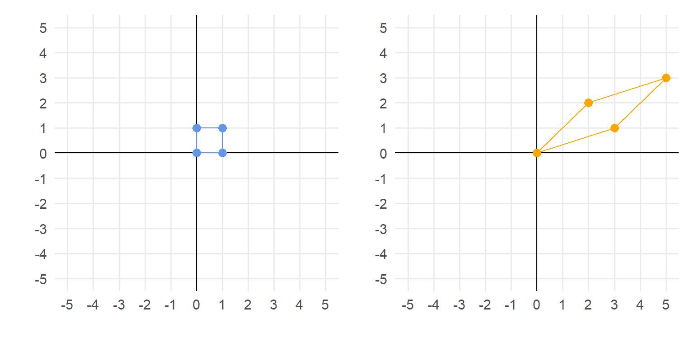Matrix algebra in R
To form and multiply matrices:
Matrix algebra in R
To form and multiply matrices:
Matrix algebra in R
To form and multiply matrices:
Identity matrix
- The identity matrix \(I\) is the matrix equivalent of “1”.
- Square \(p\times p\) matrix with 1’s on the diagonal and 0’s elsewhere:
\[ I = \begin{pmatrix} 1 & 0 & \dots & 0 \\ 0 & 1 & \dots& 0 \\ \vdots & \vdots & \ddots & \vdots \\ 0 & 0 & \dots & 1 \end{pmatrix} \]
- For any \(n \times p\) matrix \(X\), \(XI = X\).
Identity matrix
\[\color{CornflowerBlue}{{\begin{pmatrix} 0 & 0 \\ 1 & 0 \\ 1 & 1 \\ 0 & 1 \\ \end{pmatrix}}}\begin{pmatrix} 1 & 0 \\ 0 & 1 \end{pmatrix} = \color{CornflowerBlue}{\begin{pmatrix}0 & 0 \\ 1 & 0 \\ 1 & 1 \\ 0 & 1 \\ \end{pmatrix}}\]
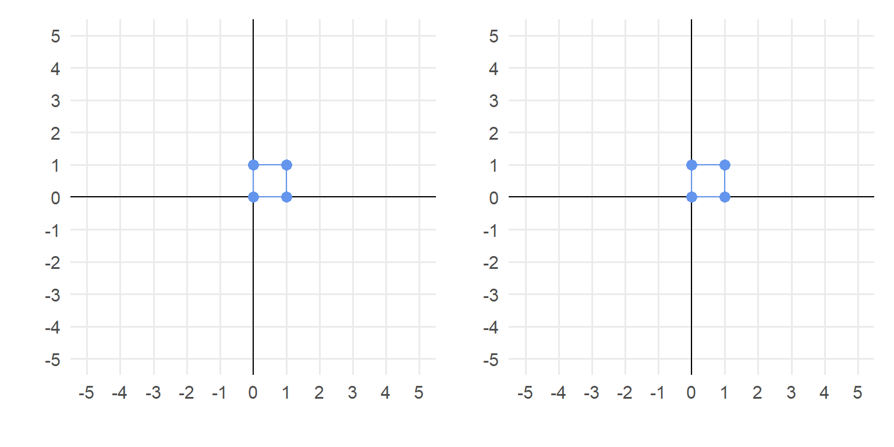Matrix inverses: going backward
\(\color{CornflowerBlue}{\begin{pmatrix} 0 & 0 \\ 1 & 0 \\ 1 & 1 \\ 0 & 1 \\ \end{pmatrix}} \begin{pmatrix} 3 & 1 \\ 2 & 2 \end{pmatrix} = \color{Orange}{\begin{pmatrix} 0 & 0 \\ 3 & 1 \\ 5 & 3 \\ 2 & 2 \end{pmatrix}}\)
\(\color{Orange}{\begin{pmatrix} 0 & 0 \\ 3 & 1 \\ 5 & 3 \\ 2 & 2 \end{pmatrix}} \begin{pmatrix} 3 & 1 \\ 2 & 2 \end{pmatrix}^{-1}= \color{CornflowerBlue}{\begin{pmatrix} 0 & 0 \\ 1 & 0 \\ 1 & 1 \\ 0 & 1 \\ \end{pmatrix}}\)
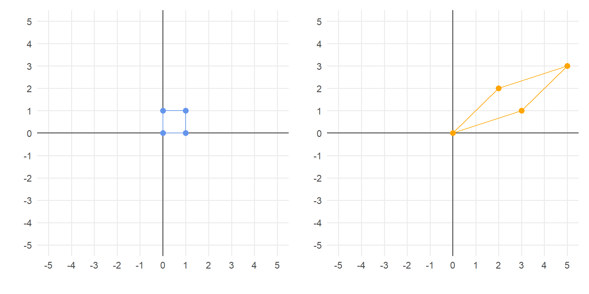
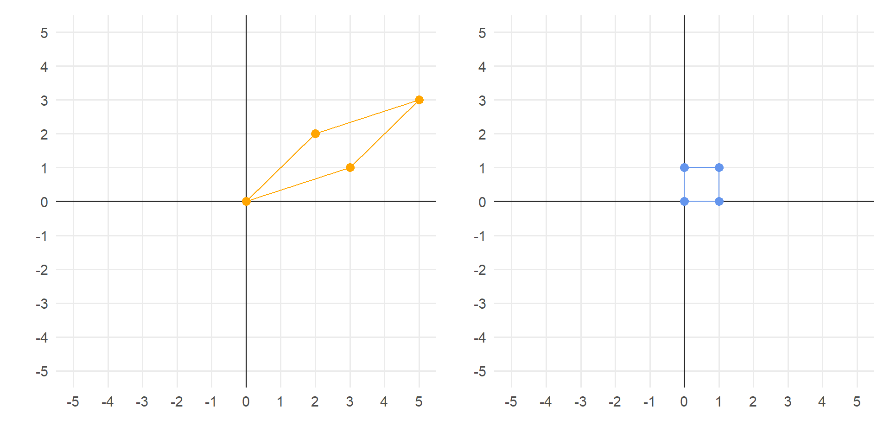
What is an inverse?
The inverse of a square \(p\times p\) matrix \(A\) is notated \(A^{-1}\) and is the matrix such that:
\[ A A^{-1} =I \]
where \(I\) is the identity matrix.
Inverses in R
Inverses in R
Inverses in R
Finding arbitrary transformation matrix
- The matrix \(A\) is often referred to as a transformation matrix
- It transforms the blue coordinates into orange coordinates
- What if have the transformation, but we want to find a matrix? E.g., what matrix \(B\) is such that \(\color{CornflowerBlue}{X}B = \color{forestgreen}{W}\) with \(\color{forestgreen}{W = \begin{pmatrix} 0 & 0 \\ 2 & -3 \\ 0 & -2 \\ -2 & 1 \end{pmatrix}}\)?
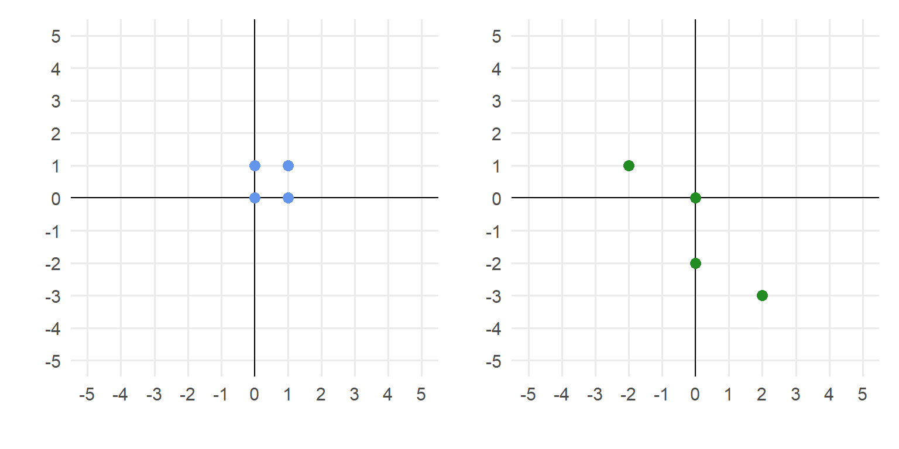
Finding arbitrary transformation matrix
We can find \(B\) (must be \(2 \times 2\)) using some matrix algebra, given we know coordinates \(\color{CornflowerBlue}{X}\) (\(4 \times 2\)) and \(\color{forestgreen}{W}\) (\(4 \times 2\)):
\[ \color{CornflowerBlue}{X}B =\color{forestgreen}{W}\]
\[ \color{CornflowerBlue}{X^T}\color{CornflowerBlue}{X}B =\color{CornflowerBlue}{X^T}\color{forestgreen}{W}\]
\[ \left(\color{CornflowerBlue}{X^T}\color{CornflowerBlue}{X}\right)^{-1}\color{CornflowerBlue}{X^T}\color{CornflowerBlue}{X}B = \left(\color{CornflowerBlue}{X^T}\color{CornflowerBlue}{X}\right)^{-1}\color{CornflowerBlue}{X^T}\color{forestgreen}{W}\]
\[ B = \left(\color{CornflowerBlue}{X^T}\color{CornflowerBlue}{X}\right)^{-1}\color{CornflowerBlue}{X^T}\color{forestgreen}{W}\]
Transforming blue into green
ggplot code
library(ggplot2)
library(patchwork) #for adding plots side-by-side
bluedf <- data.frame(bluecoords)
greendf <- data.frame(greencoords)
# Create base
base <- ggplot() +
scale_x_continuous(breaks=seq(-5,5,by=1),limits=c(-5,5)) +
scale_y_continuous(breaks=seq(-5,5,by=1),limits=c(-5,5)) +
geom_vline(aes(xintercept = 0)) + geom_hline(aes(yintercept = 0)) +
theme_minimal(base_size = 14) +
theme(panel.grid.minor = element_blank()) +
labs(x='', y='')
# Add points
bluepoints <- base +
geom_point(data = bluedf, aes(x = X1, y = X2), size = 3,col='cornflowerblue')
greenpoints <- base +
geom_point(data = df2, aes(x = X1, y = X2), size = 3,col='forestgreen')
p1 + p2Transformations commute!
If \(A\) transforms blue into orange and \(B\) transforms orange into green, then \(AB\) transforms blue into green.
See activity!
Transformations don’t have to be \(p\rightarrow p\)
- In the examples we’ve considered so far, we’ve transformed 2-dimensional space to 2-dimensional space.
- We don’t have to go \(p\rightarrow p\): we can go \(p\rightarrow m\) with \(m<p\), or \(p\rightarrow q\) with \(q > p\).
- In this class, we will most frequently encounter dimension reduction: that is. transformations into lower dimensional space (\(p \rightarrow m\) with \(m < p\)).
- There are 2 ways to “transform down”:
- Use a lower dimensional transformation matrix;
- Use a rank deficient transformation matrix
Lower dimension \(A\)
The easiest way to transform down is to use a lower-dimension transformation matrix.
Consider 3-dimensional row vector \(u = (-1, 3, 2)\) and \(3 \times 2\) transformation matrix \(A = \begin{pmatrix}3 & 2 \\ 1 & 1 \\ -1 & 4\end{pmatrix}\)
\[ u A = (-1, 3, 2)\begin{pmatrix}3 & 2 \\ 1 & 1 \\ -1 & 4\end{pmatrix}\]
\[= (-3+3-2 , -2+3+8)\]
\[ = (-2, 9)\]
Thus we have transformed the 3-dimensional \(u\) into 2-dimensional space.
Rank deficient \(A\)
- In the previous example it was obvious that using a \(3\times 2\) matrix \(A\) would transform 3-dimensional \(u\) into 2 dimensions
- But downward transformations can be more subtle!
- Consider now:
\[A = \begin{pmatrix} 1 & 4 & 2 \\ 2 & 5 & 1 \\ 3 & 6 & 0 \end{pmatrix}\]
\[u A = (-1, 3, 2)\begin{pmatrix} 1 & 4 & 2 \\ 2 & 5 & 1 \\ 3 & 6 & 0 \end{pmatrix}\]
\[ = (11, 23, 1)\]
…so it looks like we’ve stayed in 3 dimensions!
Rank deficient \(A\)
But let’s see what happens if we do this to several \(u\)’s:
[,1] [,2] [,3]
[1,] 0.6550844 0.93924628 0.6369416
[2,] 0.5774114 0.07323043 0.8723149
[3,] 0.3938457 0.61220768 0.8475611
[4,] 0.4048126 0.52145253 0.7292520
[5,] 0.5263594 0.41795632 0.5186670
[6,] 0.1073119 0.74717823 0.7474164 [,1] [,2] [,3]
[1,] 4.444402 11.138218 2.249415
[2,] 3.340817 7.909687 1.228053
[3,] 4.160944 9.721788 1.399899
[4,] 3.635474 8.602025 1.331078
[5,] 2.918273 7.307222 1.470675
[6,] 3.843918 8.649637 0.961802Plotting \(U\) and \(UA\)
\(U\) is truly 3D:
\(UA\) is collapsed to a 2D plane!
What gives with \(A\)?
\[A =\begin{pmatrix} 1 & 4 & 2 \\ 2 & 5 & 1 \\ 3 & 6 & 0 \end{pmatrix}\]
\[= \begin{pmatrix} 1 & 4 & 4-2\cdot 1 \\ 2 & 5 & 5-2\cdot2 \\ 3 & 6 & 6-2\cdot 3 \end{pmatrix}\]
So the 3rd column is a linear combination of the first two!
Determinants and rank deficiency
- A rank deficient transformation matrix has redundancy in rows or columns
- In other words, one or more of the columns is a linear combination of the others (equivalent for rows)
- A rank deficient, \(p\times p\) matrix \(A\) has determinant = 0
- Determinant = scalar-valued function of a square matrix
\[det \begin{pmatrix} a & b \\ c & d \end{pmatrix} =ad-bc\] - …increasingly more complex for higher \(p\)! (use R in general)
Rank deficiency in 2 dimensions
Consider the \(n=50\), \(p=2\)-dimensional vectors in the cars data set:

Rank deficiency in 2 dimensions
- Let’s apply the \(2 \times 2\) transformation matrix \(A = \begin{pmatrix} 1 &0\\ 0&0\end{pmatrix}\)
- This collapses the data set down to just its \(x\) coordinates:
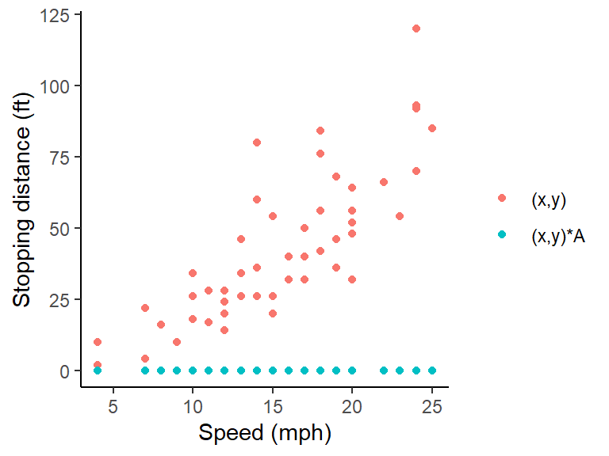
Quiz question 1
Let \(T\) be a transformation matrix represented by:
\[T = \begin{pmatrix} 1 & 0 \\ 2 & -3 \end{pmatrix}\]
Does this matrix produce a \(2 \rightarrow 2\) or a \(2 \rightarrow 1\) transformation?
Find the determinant to answer this question!
Verifying quiz question 1
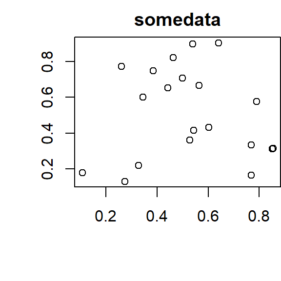
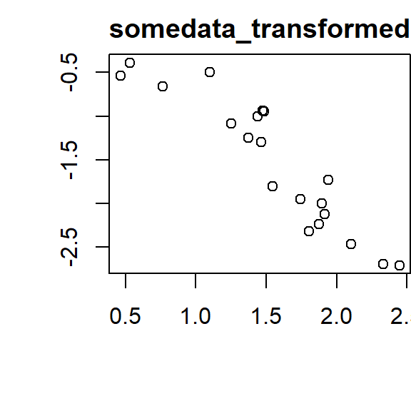
Quiz question 2
Let \(W\) be a transformation matrix represented by:
\[W = \begin{pmatrix} 1 & 3 \\ 2 & 6 \end{pmatrix}\]
Does this matrix produce a \(2 \rightarrow 2\) or a \(2 \rightarrow 1\) transformation? Answer in 2 ways:
- Finding the determinant of the matrix;
- Identifying in what way the columns are linear combinations of each other
Verifying quiz question 2
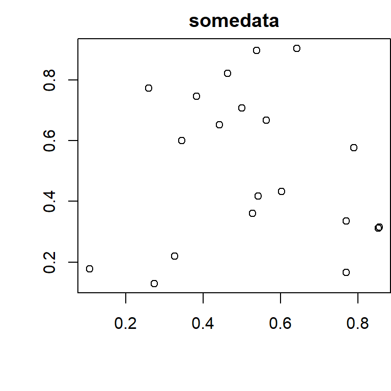
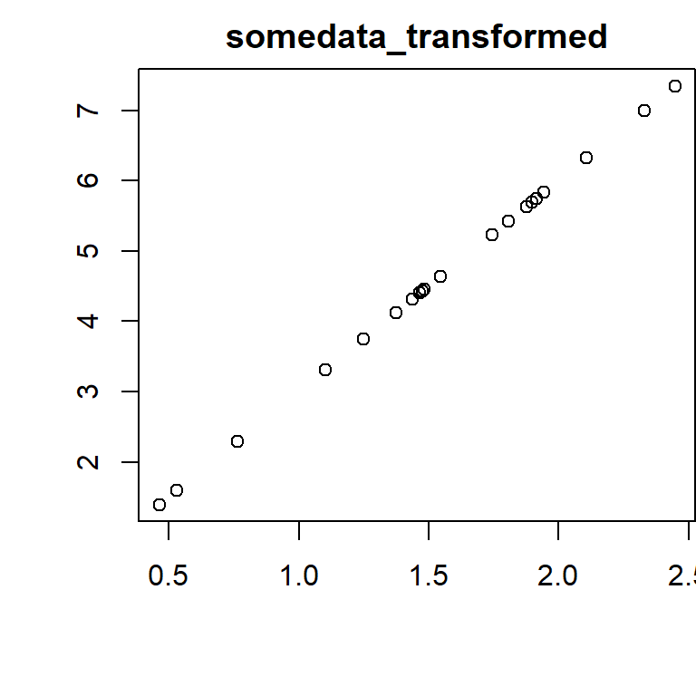